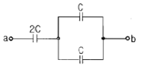
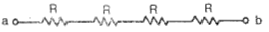
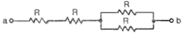
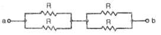
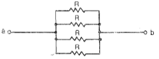
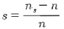
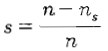
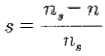
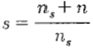
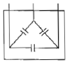

전기기능사 (2013-10-12 기출문제)
1과목: 전기 이론
1. 그림에서 a-b 간의 합성 정전용량은?

- C
- 2C
- 3C
- 4C
(정답률: 74%)

2. 묽은 황산(H2SO4)용액에 구리(Cu)와 아연(Zn)판을 넣으면 전지가 된다. 이때 양극(+)에 대한 설명으로 옳은 것은?
- 구리판이며 수소 기체가 발생한다.
- 구리판이며 산소 기체가 발생한다.
- 아연판이며 산소 기체가 발생한다.
- 아연판이며 수소 기체가 발생한다.
(정답률: 74%)
3. 자기저항의 단위는?
- AT/m
- Wb/AT
- AT/Wb
- Ω/AT
(정답률: 75%)
4. 역률 0.8, 유효전력 4000 kw인 부하의 역률을 100%로 하기 위한 콘덴서의 용량(kVA)은?
- 3200
- 3000
- 2800
- 2400
(정답률: 32%)
5. i = Imsin ωt(A)인 정현파 교류에서 ωt가 몇 ° 일 때 순시값과 실효값이 같게 되는가?
- 90°
- 60°
- 45°
- 0°
(정답률: 55%)
6. 다음 중 가장 무거운 것은?
- 양성자의 질량과 중성자의 질량의 합
- 양성자의 질량과 전자의 질량의 합
- 원자핵의 질량과 전자의 질량의 합
- 중성자의 질량과 전자의 질량의 합
(정답률: 72%)
7. 발전기의 유도 전압의 방향을 나타내는 법칙은?
- 패러데이의 법칙
- 렌츠의 법칙
- 오른나사의 법칙
- 플레밍의 오른손 법칙
(정답률: 73%)
8. Y-Y 평형 회로에서 상전압 Vp가 100V, 부하 z=8+6j(Ω) 이면 선전류 Iㅣ 의 크기는몇 A인가?
- 2
- 5
- 7
- 10
(정답률: 77%)
9. 전기장의 세기에 관한 단위는?
- H/m
- F/m
- AT/m
- V/m
(정답률: 64%)
10. 반지름 0.2m, 권수 50회의 원형 코일이 있다. 코일 중심의 자기장의 세기가 850 AT/m 이었다면 코일에 흐르는 전류의 크기는?
- 0.68 A
- 6.8 A
- 10 A
- 20 A
(정답률: 62%)
11. 같은 저항 4개를 그림과 같이 연결하여 a-b간에 일정전압을 가했을 때 소비전력이 가장 큰 것은 어느 것인가?




(정답률: 71%)
12. 자체 인덕턴스 L1, L2, 상호 인덕턴스 M 인 두 코일을 같은 방향으로 직렬 연결한 경우 합성 인덕턴스는?
- L1 + L2+ M
- L1 + L2- M
- L1 + L2+ 2M
- L1 + L2- 2M
(정답률: 83%)
13. 저항이 9Ω 이고, 용량 리액턴스가 12Ω 인 직렬회로의 임피던스(Ω)는?
- 3 Ω
- 15 Ω
- 21 Ω
- 108 Ω
(정답률: 58%)
14. 전기력선의 성질 중 맞지 않는 것은?
- 전기력선은 양(+)전하에서 나와 음(-)전하에서 끝난다.
- 전기력선의 접선방향이 전장의 방향이다.
- 전기력선은 도중에 만나거나 끊어지지 않는다.
- 전기력선은 등전위면과 교차하지 않는다.
(정답률: 67%)
15. 10 ℃, 5000 g의 물을 40 ℃ 로 올리기 위하여 1kW의 전열기를 쓰면 몇 분이 걸리게 되는가?(단. 여기서 효율은 80%라고 한다.)
- 약 13분
- 약 15분
- 약 25분
- 약 50분
(정답률: 39%)
16. 교류에서 파형률은?
- 파형률 = 최대값 / 실효값
- 파형률 = 실효값 / 평균값
- 파형률 = 평균값 / 실효값
- 파형률 = 최대값 / 평균값
(정답률: 74%)
17. 전류계의 측정범위를 확대시키기 위하여 전류계와 병렬로 접속하는 것은?
- 분류기
- 배율기
- 검류기
- 전위차계
(정답률: 57%)
18. 대칭 3상 전압에 △결선으로 부하가 구성되어 있다. 3상중 한 선이 단선되는 경우, 소비되는 전력은 끊어지기 전과 비교하여 어떻게 되는가?
- 3/2으로 증가한다.
- 2/3로 줄어 든다.
- 1/3로 줄어든다.
- 1/2로 줄어든다.
(정답률: 33%)
19. 전선의 길이를 4배로 늘렸을 때, 처음의 저항값을 유지하기 위해서는 도선의 반지름을 어떻게 해야 하는가?
- 1/4로 줄인다.
- 1/2로 줄인다.
- 2배로 늘인다.
- 4배로 늘인다.
(정답률: 37%)
20. R = 15Ω인 RC 직렬 회로에 80Hz, 100V의 전압을 가하니 4A의 전류가 흘렀다면 용량 리액턴스는?
- 10
- 15
- 20
- 25
(정답률: 47%)
2과목: 전기 기기
21. 다음 중 기동 토크가 가장 큰 전동기는?
- 분산기동형
- 콘덴서모터형
- 세이딩코일형
- 반발기동형
(정답률: 78%)
22. 변압기에서 철손은 부하전류와 어떤 관계 인가?(오류 신고가 접수된 문제입니다. 반드시 정답과 해설을 확인하시기 바랍니다.)
- 부하전류에 비례한다.
- 부하전류에 자승에 비례한다.
- 부하전류에 반비례한다.
- 부하전류와 관계없다.
(정답률: 35%)
23. e = √2 E sinωt[V] 정현파 전압을 가했을 때 직류 평균값 Edo = 0.45E[V]인 회로는?
- 단상 반파 정류회로
- 단상 전파 정류회로
- 3상 반파 정류회로
- 3상 전파 정류회로
(정답률: 62%)
24. 직류 발전기 중 무부하 전압과 전부하 전압이 같도록 설계된 직류 발전기는?
- 분권 발전기
- 직권 발전기
- 평복권 발전기
- 차동복권 발전기
(정답률: 68%)
25. 변압기의 백분율 저항강하가 2%, 백분율 리액턴스강하가 3%일 때 부하역률이 80%인 변압기의 전압변동률[%]은?
- 1.2
- 2.4
- 3.4
- 3.6
(정답률: 43%)
26. 슬립 4%인 3상 유도전동기의 2차 동손이 0.4kW일 때 회전자의 입력 [kW]은?
- 6
- 8
- 10
- 12
(정답률: 45%)
27. 6600/220V 인 변압기의 1차에 2850 V를 가하면 2차 전압[V]은?
- 90
- 95
- 120
- 1⑤
(정답률: 68%)
28. 세이딩코일형 유도전동기의 특징을 나타낸 것으로 틀린 것은?
- 역률과 효율이 좋고 구조가 간단하여 세탁기 등 가정용 기기에 많이 쓰인다.
- 회전자는 농형이고 고정자의 성층철심은 몇개의 돌극으로 되어 있다.
- 기동 토크가 작고 출력이 수 10Wk 이하의 소형 전동기에 주로 사용된다.
- 운전 중에도 세이딩코일에 전류가 흐르고 속도변동률이 크다.
(정답률: 53%)
29. 다음 중 제동권선에 의한 기동토크를 이용하여 동기전동기를 기동시키는 방법은?
- 저주파 기동법
- 고주파 기동법
- 기동 전동기법
- 자기 기동법
(정답률: 33%)
30. 동기 발전기의 병렬운전 중에 기전력의 위상차가 생기면?
- 위상이 일치하는 경우보다 출력이 감소한다.
- 부하 분담이 변한다.
- 무효 순환전류가 흘러 자기자 권선이 과열된다.
- 동기화력이 생겨 두 기전력의 위상이 동상이 되도록 작용한다.
(정답률: 52%)
31. 유도전동기의 동기속도 ns, 회전속도 n 일때 슬립은?




(정답률: 67%)
32. 직류 전동기의 제어에 널리 응용되는 직류 - 직류 전압 제어장치는?
- 인버터
- 컨버터
- 초퍼
- 전파정류
(정답률: 75%)
33. 보호구간에 유입하는 전류와 유출하는 전류의 차에 의해 동작하는 계전기는?
- 비율차동 계전기
- 거리 계전기
- 방향 계전기
- 부족전압 계전기
(정답률: 75%)
34. 3상 유도전동기의 회전방향을 바꾸기 위한 방법으로 가장 옳은 것은?
- △ - Y 결선으로 결선법을 바꾸어 준다.
- 전원의 전압과 주파수를 바꾸어 준다.
- 전동기의 1차 권선에 있는 3개의 단자 중 어느 2개의 단자를 서로 바꾸어 준다.
- 기동보상기를 사용하여 권선을 바꾸어 준다.
(정답률: 79%)
35. 직류발전기의 정류를 개선하는 방법 중 틀린 것은?
- 코일의 자기 인덕턴스가 원인이므로 접촉저항이 작은 브러시를 사용한다.
- 보극을 설치하여 리액턴스 전압을 감소시킨다.
- 보극 권선은 전기자 권선과 직렬로 접속한다.
- 브러시를 전기적 중성축을 지나서 회전방향으로 약간 이동 시킨다.
(정답률: 48%)
36. 동기 전동기에 대한 설명으로 옳지 않는 것은?
- 정속도 전동기로 비교적 회전수가 낮고 큰 출력이 요구되는 부하에 이용한다.
- 난조가 발생하기 쉽고, 속도제어가 간단하다.
- 전력계통의 전류세기, 역률 등을 조정할 수 있는 동기 조상기로 사용된다.
- 가변 주파수에 의해 정밀속도 제어 전동기로 사용된다.
(정답률: 41%)
37. 전기자 저항이 0.2Ω, 전류 100A, 전압 120V 일 때 분권전동기의 발생 동력[kW]은?
- 5
- 10
- 14
- 20
(정답률: 40%)
38. 직류 전동기의 속도 제어에서 자속을 2배로 하면 회전수는?
- 1/2로 줄어든다.
- 변함이 없다.
- 2배로 증가한다.
- 4배로 증가한다.
(정답률: 40%)
39. 3상 변압기의 병렬운전이 불가능한 결선 방식으로 짝지은 것은?
- △ - △ 와 Y - Y
- △ - Y 와 △ - Y
- Y - Y 와 Y - Y
- △ - △ 와 △ - Y
(정답률: 72%)
40. 동기발전기의 공극이 넓을 때의 설명으로 잘못된 것은?
- 안정도 증대
- 단락비가 크다.
- 여자전류가 크다
- 전압변동이 크다.
(정답률: 41%)
3과목: 전기 설비
41. 단선의 직선접속 방법 중에서 트위스트 직선접속을 할 수 있는 최대 단면적은 몇 [mm2] 이하인가?
- 2.5
- 4
- 6
- 10
(정답률: 72%)
42. 아래 심벌이 나타내는 것은?

- 저항
- 진상용 콘덴서
- 유입 개폐기
- 변압기
(정답률: 69%)
43. 부식성 가스 등이 있는 장소에 전기설비를 시설하는 방법으로 적합하지 않은 것은?
- 애자사용배선시 부식성 가스의 종류에 따라 절연전선인 DV전선을 사용한다.
- 애자사용배선에 의한 경우에는 사람이 쉽게 접촉될 우려가 없는 노출장소에 한 한다.
- 애자사용배선시 부득이 나전선을 사용하는 경우에는 전선과 조영재와의 거리를 4.5[cm] 이상으로 한다.
- 애자사용배선시 전선의 절연물이 상해를 받는 장소는 나전선을 사용할 수 있으며, 이 경우는 바닥 위 2.5[m]이상 높이에 시설한다.
(정답률: 44%)
44. 금속몰드 배선시공 시 사용전압은 몇 [V] 미만이어야 하는가?
- 100
- 200
- 300
- 400
(정답률: 62%)
45. 16㎜ 합성수지 전선관을 직각 구부리기를 할 경우 구부림 부분의 길이는 약 몇 [㎜]인가?(단, 16㎜ 합성수지관의 안지름은 18㎜, 바깥지름은 22㎜이다.)
- 119
- 132
- 187
- 220
(정답률: 34%)
46. 셀룰라덕트 공사 시 덕트 상호간을 접속하는 것과 셀룰라덕트 끝에 접속하는 부속품에 대한 설명으로 적합하지 않은 것은?
- 알루미늄 판으로 특수 제작할 것
- 부속품의 판 두께는 1.6mm 이상일 것
- 덕트 끝과 내면은 전선의 피복이 손상하지 않도록 매끈한 것일 것
- 덕트의 내면과 외관은 녹을 방지하기 위하여 도금 또는 도장을 한 것일 것
(정답률: 40%)
47. 지중전선로에 사용되는 케이블 중 고압용 케이블은?(실제 시험에서 전항 정답 처리된 문제 입니다. 여기서는 1번을 누르면 정답 처리 됩니다.)
- 곰바인덕터(CD) 케이블
- 폴리에틸렌 외장케이블
- 클로로플렌 외장케이블
- 비닐 외장케이블
(정답률: 75%)
48. 교통신호등의 제어장치로부터 신호등의 전구까지의 전로에 사용하는 전압은 몇 [V] 이하인가?
- 60
- 100
- 300
- 440
(정답률: 60%)
49. 사용전압이 400V 이상인 경우 금속관 및 부속품 등은 사람이 접촉할 우려가 없는 경우 제 몇 종 접지공사를 하는가?(오류 신고가 접수된 문제입니다. 반드시 정답과 해설을 확인하시기 바랍니다.)
- 제1종
- 제2종
- 제3종
- 특별 제3종
(정답률: 46%)
50. 옥내배선공사 중 금속관 공사에 사용되는 공구의 설명 중 잘못된 것은?(오류 신고가 접수된 문제입니다. 반드시 정답과 해설을 확인하시기 바랍니다.)
- 전선관의 굽힙 작업에 사용하는 공구는 토치램프나 스프링 벤더를 사용한다.
- 전선관의 나사를 내는 작업에 오스터를 사용한다.
- 전선관을 절단하는 공구에는 쇠톱 또는 파이프 커터를 사용한다.
- 아우트렛 박스의 천공작업에 사용되는 공구는 녹아웃 펀치를 사용한다.
(정답률: 55%)
51. 주상 변압기의 고ㆍ저압 혼촉 방지를 위해 실시하는 2차측 접지공사는?(관련 규정 개정전 문제로 여기서는 기존 정답인 2번을 누르면 정답 처리됩니다. 자세한 내용은 해설을 참고하세요.)
- 제1종
- 제2종
- 제3종
- 특별 제3종
(정답률: 67%)
52. OW 전선을 사용하는 저압 구내 가공인입전선으로 전선의 길이가 15[m]를 초과하는 경우 그 전선의 지름은 몇 [㎜] 이상을 사용하여야 하는가?
- 1.6
- 2.0
- 2.6
- 3.2
(정답률: 45%)
53. 금속관 내의 같은 굵기의 전선을 넣을 때는 절연전선의 피복을 포함한 총 단면적이 금속관 내부 단면적의 몇[%] 이하 이어야 하는가?
- 16
- 24
- 32
- 48
(정답률: 42%)
54. 석유류를 저장하는 장소의 공사 방법 중 틀린 것은?
- 케이블 공사
- 애자사용 공사
- 금속관 공사
- 합성수지관 공사
(정답률: 73%)
55. 다음 중 가요전선관 공사로 적당하지 않은 것은?
- 옥내의 천장 은폐배선으로 8각 박스에서 형광등기구에 이르는 짧은 부분의 전선관공사
- 프레스 공작기계 등의 굴곡개소가 많아 금속관 공사가 어려운 부분의 전선관공사
- 금속관에서 전동기부하에 이르는 짧은 부분의 전선관공사
- 수변전실에서 배전반에 이르는 부분의 전선관공사
(정답률: 44%)
56. 무대ㆍ무대밑ㆍ오케스트라 박스ㆍ영사실 기타 사람이나 무대 도구가 접촉될 우려가 있는 장소에 시설하는 저압 옥내배선ㆍ전구선 또는 이동전선은 사용전압이 몇[V] 미만 이어야하는가?
- 400
- 500
- 600
- 700
(정답률: 81%)
57. 전주의 길이가 16[m]인 지지물을 건주하는 경우에 땅에 묻히는 최소 깊이는 몇 [m] 인가?(단, 설계하중이 6.8[kN] 이하이다.)
- 1.5
- 2.0
- 2.5
- 3.5
(정답률: 62%)
58. 가로등, 경기장, 공장, 아파트 단지 등의 일반조명을 위하여 시설하는 고압방전등의 효율은 몇 [ℓm/W] 이상의 것이어야 하는가?
- 30
- 70
- 90
- 120
(정답률: 52%)
59. 다음 배전반 및 분전반의 설치 장소로 적합하지 않은 곳은?
- 전기 회로를 쉽게 조작할 수 있는 장소
- 개폐기를 쉽게 개폐할 수 있는 장소
- 노출된 장소
- 사람이 쉽게 조작할 수 없는 장소
(정답률: 71%)
60. 전압의 구분에서 저압 직류전압은 몇 [V] 이하인가?(관련 규정 개정전 문제로 여기서는 기존 정답인 3번을 누르면 정답 처리됩니다. 자세한 내용은 해설을 참고하세요.)
- 400
- 600
- 750
- 900
(정답률: 74%)